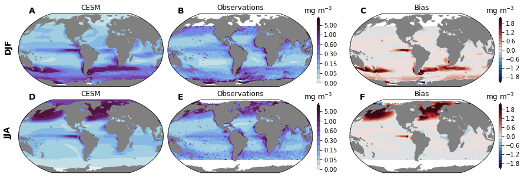
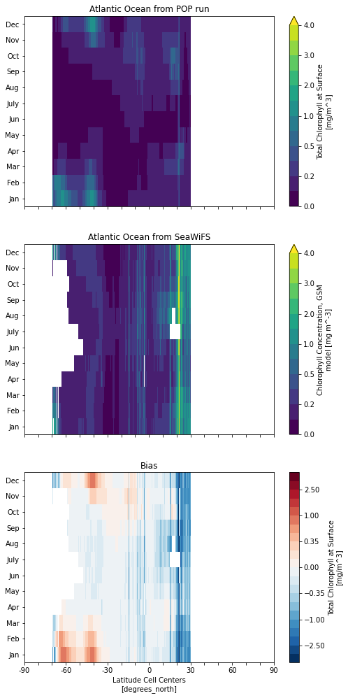
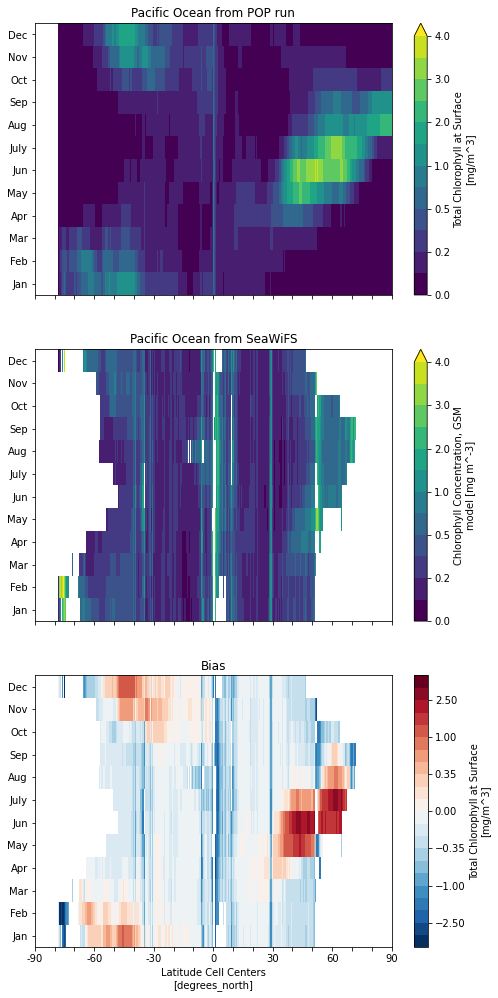

Chlorophyll¶
%load_ext autoreload
%autoreload 2
%matplotlib inline
import os
import numpy as np
import xarray as xr
import esmlab
import pop_tools
import ncar_jobqueue
import dask_jobqueue
from dask.distributed import Client
import utils
import climo_utils as cu
import ann_avg_utils as aau
units, _ = aau.get_pint_units()
import matplotlib.pyplot as plt
import matplotlib.gridspec as gridspec
import matplotlib.colors as colors
import cartopy
import cartopy.crs as ccrs
import cmocean
import xpersist as xp
# Set up xperist cache
cache_dir = os.path.join(os.path.sep, 'glade', 'p', 'cgd', 'oce', 'projects', 'cesm2-marbl', 'xpersist_cache', 'chl')
if (os.path.isdir(cache_dir)):
xp.settings['cache_dir'] = cache_dir
os.makedirs(cache_dir, exist_ok=True)
%load_ext watermark
%watermark -a "Mike Levy" -d -iv -m -g -h
Author: Mike Levy
Compiler : GCC 9.3.0
OS : Linux
Release : 3.10.0-1127.18.2.el7.x86_64
Machine : x86_64
Processor : x86_64
CPU cores : 72
Architecture: 64bit
Hostname: crhtc62
Git hash: 9345b6858001ba2f1e8274d90804f8af023054d5
dask_jobqueue: 0.7.2
pop_tools : 2020.12.15
esmlab : 2019.4.27.post55
xpersist : 2020.4.30.post5
ncar_jobqueue: 2021.2.10
numpy : 1.20.2
xarray : 0.17.0
cmocean : 2.0
cartopy : 0.18.0
matplotlib : 3.4.1
try:
cluster
client
except:
#cluster = ncar_jobqueue.NCARCluster(project='P93300606')
cluster = dask_jobqueue.PBSCluster(project='P93300606')
cluster.adapt(minimum_jobs=0, maximum_jobs=24)
client = Client(cluster)
client
Client
|
Cluster
|
%%time
def _compute_ds_surf():
PFTs = ['sp', 'diat', 'diaz']
for n, PFT in enumerate(PFTs):
# Read CESM data
variable = f'{PFT}Chl'
ds_tmp = cu.read_CESM_var(slice("1990-01-15", "2015-01-15"), variable, mean_dims='member_id').isel(z_t_150m=0) # 1990 - 2014, inclusive
if n == 0:
ds_surf = ds_tmp.rename({variable : 'totChl'})
else:
ds_surf['totChl'] = ds_surf['totChl'] + ds_tmp.rename({variable : 'totChl'})['totChl']
del(ds_tmp)
ds_surf['totChl'].attrs['long_name'] = 'Total Chlorophyll at Surface'
return ds_surf
xp_func = xp.persist_ds(_compute_ds_surf, name=f'totChl_monthly', trust_cache=True)
ds_surf = xp_func()
ds_surf_avg = ds_surf.mean(dim='time') # unweighted (should be weighted by days per month)
da_surf_avg = ds_surf_avg['totChl']
ds_ann = ds_surf.drop(['dz', 'z_t']).groupby('time.month').mean()
ds_ann = ds_ann.assign_coords(month=np.arange(12, dtype=np.int32))
ds_ann['month'].encoding['dtype'] = np.int32
ds_ann['month'].attrs['_FillValue'] = np.int32(-100)
ds_DJF = ds_surf.drop(['dz', 'z_t']).groupby('time.month').mean()
ds_DJF = ds_DJF.assign_coords(month= np.arange(12, dtype=np.int32))
ds_DJF['month'].encoding['dtype'] = np.int32
ds_DJF['month'].attrs['_FillValue'] = np.int32(-100)
ds_JJA = ds_surf.drop(['dz', 'z_t']).groupby('time.month').mean()
ds_JJA = ds_JJA.assign_coords(month=np.arange(12, dtype=np.int32))
ds_JJA['month'].encoding['dtype'] = np.int32
ds_JJA['month'].attrs['_FillValue'] = np.int32(-100)
try:
del(tot_days_ann)
except:
pass
try:
del(tot_days_DJF)
except:
pass
try:
del(tot_days_JJA)
except:
pass
for n, days in enumerate([31, 28, 31, 30, 31, 30, 31, 31, 30, 31, 30, 31]):
# Annual
try:
tot_days_ann = tot_days_ann + days
ds_surf_ann_avg = ds_surf_ann_avg + ds_ann.isel(month=n, drop=True) * days
except:
tot_days_ann = days
ds_surf_ann_avg = ds_ann.isel(month=n, drop=True) * days
# DJF
if n in [0, 1, 11]:
try:
tot_days_DJF = tot_days_DJF + days
ds_surf_DJF_avg = ds_surf_DJF_avg + ds_DJF.isel(month=n, drop=True) * days
except:
tot_days_DJF = days
ds_surf_DJF_avg = ds_DJF.isel(month=n, drop=True) * days
# JJA
if n in [5, 6, 7]:
try:
tot_days_JJA = tot_days_JJA + days
ds_surf_JJA_avg = ds_surf_JJA_avg + ds_JJA.isel(month=n, drop=True) * days
except:
tot_days_JJA = days
ds_surf_JJA_avg = ds_JJA.isel(month=n, drop=True) * days
print(f'{tot_days_ann} days in a year')
da_surf_ann_avg = ds_surf_ann_avg['totChl']/tot_days_ann
print(f'{tot_days_DJF} days in DJF')
da_surf_DJF_avg = ds_surf_DJF_avg['totChl']/tot_days_DJF
print(f'{tot_days_JJA} days in JJA')
da_surf_JJA_avg = ds_surf_JJA_avg['totChl']/tot_days_JJA
assuming cache is correct
reading cached file: /glade/p/cgd/oce/projects/cesm2-marbl/xpersist_cache/chl/totChl_monthly.nc
365 days in a year
90 days in DJF
92 days in JJA
CPU times: user 2.84 s, sys: 697 ms, total: 3.54 s
Wall time: 7.99 s
ds_surf_obs_ann = cu.read_obs(src='SeaWiFS', freq='ann')['chl_gsm'].to_dataset(name='totChl')
ds_surf_obs_DJF = cu.read_obs(src='SeaWiFS', freq='DJF')['chl_gsm'].to_dataset(name='totChl')
ds_surf_obs_JJA = cu.read_obs(src='SeaWiFS', freq='JJA')['chl_gsm'].to_dataset(name='totChl')
ds_surf_plot = xr.Dataset({
'totChl_DJF': da_surf_DJF_avg,
'totChl_JJA': da_surf_JJA_avg,
'totChl_DJF_obs': ds_surf_obs_DJF['totChl'].drop(['TLONG', 'TLAT']),
'totChl_JJA_obs': ds_surf_obs_JJA['totChl'].drop(['TLONG', 'TLAT']),
})
ds_surf_plot = utils.pop_add_cyclic(ds_surf_plot)
ds_surf_plot.info()
xarray.Dataset {
dimensions:
nlat = 384 ;
nlon = 321 ;
variables:
float64 TLAT(nlat, nlon) ;
float64 TLONG(nlat, nlon) ;
float32 totChl_DJF(nlat, nlon) ;
totChl_DJF:long_name = Total Chlorophyll at Surface ;
totChl_DJF:units = mg/m^3 ;
totChl_DJF:grid_loc = 3114 ;
totChl_DJF:cell_methods = time: mean ;
float32 totChl_JJA(nlat, nlon) ;
totChl_JJA:long_name = Total Chlorophyll at Surface ;
totChl_JJA:units = mg/m^3 ;
totChl_JJA:grid_loc = 3114 ;
totChl_JJA:cell_methods = time: mean ;
float64 totChl_DJF_obs(nlat, nlon) ;
totChl_DJF_obs:long_name = Chlorophyll Concentration, GSM model ;
totChl_DJF_obs:units = mg m^-3 ;
totChl_DJF_obs:standard_name = mass_concentration_chlorophyll_concentration_in_sea_water ;
totChl_DJF_obs:reference = Maritorena S., D.A. Siegel and A. Peterson, Optimization of a Semi-Analytical Ocean Color Model for Global Scale Applications, Applied Optics, 41(15): 2705-2714, 2002. ;
totChl_DJF_obs:display_scale = log ;
totChl_DJF_obs:display_min = 0.009999999776482582 ;
totChl_DJF_obs:display_max = 20.0 ;
totChl_DJF_obs:regrid_method = conservative ;
totChl_DJF_obs:history =
2020-05-08 13:20:46.184017 esmlab.regrid <regrid> ;
float64 totChl_JJA_obs(nlat, nlon) ;
totChl_JJA_obs:long_name = Chlorophyll Concentration, GSM model ;
totChl_JJA_obs:units = mg m^-3 ;
totChl_JJA_obs:standard_name = mass_concentration_chlorophyll_concentration_in_sea_water ;
totChl_JJA_obs:reference = Maritorena S., D.A. Siegel and A. Peterson, Optimization of a Semi-Analytical Ocean Color Model for Global Scale Applications, Applied Optics, 41(15): 2705-2714, 2002. ;
totChl_JJA_obs:display_scale = log ;
totChl_JJA_obs:display_min = 0.009999999776482582 ;
totChl_JJA_obs:display_max = 20.0 ;
totChl_JJA_obs:regrid_method = conservative ;
totChl_JJA_obs:history =
2020-05-08 13:20:46.669145 esmlab.regrid <regrid> ;
// global attributes:
}
units = 'mg m$^{-3}$'
title = {
'totChl_DJF': 'Chlorophyll (DJF)',
'totChl_JJA': 'Chlorophyll (JJA)',
}
cmap_field = cmocean.cm.dense
cmap_bias = cmocean.cm.balance
levels = dict(
totChl=[0, 0.01, 0.05, 0.1, 0.15, 0.2, 0.3, 0.4, 0.6, 0.8, 1, 2, 5, 20],
)
levels_bias = dict(
totChl=np.linspace(-2, 2, 21),
)
contour_spec = dict(
totChl=dict(
levels=levels['totChl'],
extend='max',
cmap=cmap_field,
norm=colors.BoundaryNorm(levels['totChl'], ncolors=cmap_field.N),
),
totChl_bias=dict(
levels=levels_bias['totChl'],
extend='both',
cmap=cmap_bias,
norm=colors.BoundaryNorm(levels_bias['totChl'], ncolors=cmap_bias.N),
),
)
fig = plt.figure(figsize=(12, 8))
gs = gridspec.GridSpec(nrows=3, ncols=5, width_ratios=(1, 1, 0.02, 1, 0.02))
prj = ccrs.Robinson(central_longitude=305.0)
axs = []
maps = []
for i, fld in enumerate(['totChl_DJF', 'totChl_JJA']):
ax_m = plt.subplot(gs[i, 0], projection=prj)
ax_o = plt.subplot(gs[i, 1], projection=prj)
ax_b = plt.subplot(gs[i, 3], projection=prj)
ax_m.set_global()
ax_o.set_global()
ax_b.set_global()
cax_field = plt.subplot(gs[i, 2])
cax_bias = plt.subplot(gs[i, 4])
axs.append((ax_m, ax_o, cax_field, ax_b, cax_bias))
maps.extend([ax_m, ax_o, ax_b])
cesm = ds_surf_plot[fld]
obs = ds_surf_plot[f'{fld}_obs']
bias = cesm - obs
cf_m = ax_m.contourf(
ds_surf_plot.TLONG, ds_surf_plot.TLAT, cesm,
**contour_spec['totChl'],
transform=ccrs.PlateCarree(),
)
# cl_m = ax_m.contour(
# ds_surf_plot.TLONG, ds_surf_plot.TLAT, cesm,
# levels=contour_spec['totChl']['levels'], colors='k', linewidths=0.2,
# transform=ccrs.PlateCarree(),
# )
cf_o = ax_o.contourf(
ds_surf_plot.TLONG, ds_surf_plot.TLAT, obs,
**contour_spec['totChl'],
transform=ccrs.PlateCarree(),
)
# cl_o = ax_o.contour(
# ds_surf_plot.TLONG, ds_surf_plot.TLAT, obs,
# levels=contour_spec['totChl']['levels'], colors='k', linewidths=0.2,
# transform=ccrs.PlateCarree(),
# )
cf_b = ax_b.contourf(
ds_surf_plot.TLONG, ds_surf_plot.TLAT, bias,
**contour_spec['totChl_bias'],
transform=ccrs.PlateCarree(),
)
# cl_b = ax_b.contour(
# ds_surf_plot.TLONG, ds_surf_plot.TLAT, bias,
# levels=contour_spec['totChl_bias']['levels'], colors='k', linewidths=0.2,
# transform=ccrs.PlateCarree(),
# )
for ax in [ax_m, ax_o, ax_b]:
land = ax.add_feature(
cartopy.feature.NaturalEarthFeature(
'physical','land','110m',
edgecolor='face',
facecolor='gray'
)
)
ax_m.set_title('CESM')
ax_o.set_title('Observations')
ax_b.set_title('Bias')
cb_field = plt.colorbar(cf_o, cax=cax_field, drawedges=True)
cb_field.ax.set_title(units)
cb_field.outline.set_linewidth(0.5)
cb_field.dividers.set_linewidth(0.25)
cb_bias = plt.colorbar(cf_b, cax=cax_bias, drawedges=True)
cb_bias.ax.set_title(units)
cb_bias.outline.set_linewidth(0.5)
cb_bias.dividers.set_linewidth(0.25)
# add a gap between left two columns and right; scale colorbars
gs.update(left=0.05, right=0.95, hspace=0.05, wspace=0.05)
offset = 0.05
cax_vert_shrink = 0.8
for i in range(len(axs)):
# the row of axis objects
ax_m, ax_o, cax_field, ax_b, cax_bias = axs[i]
# shift map
p0 = ax_b.get_position()
ax_b.set_position([p0.x0 + offset, p0.y0, p0.width, p0.height])
# shift and scale colorbar
p0 = cax_bias.get_position()
shift_up = p0.height * (1. - cax_vert_shrink) / 2
cax_bias.set_position([p0.x0 + offset, p0.y0 + shift_up, p0.width, p0.height * cax_vert_shrink])
# scale colorbar
p0 = cax_field.get_position()
shift_up = p0.height * (1. - cax_vert_shrink) / 2
cax_field.set_position([p0.x0, p0.y0 + shift_up, p0.width, p0.height * cax_vert_shrink])
fig.text(0.03, 0.75, 'DJF',
fontsize=14.,
fontweight='semibold',
horizontalalignment='center',
rotation=90);
fig.text(0.03, 0.5, 'JJA',
fontsize=14.,
fontweight='semibold',
horizontalalignment='center',
rotation=90);
utils.label_plots(fig, maps, xoff=0.02, yoff=0)
utils.savefig('chl-surface-maps')

Hovmöller plots for zonal means in Atlantic and Pacific¶
x-axis should be latitude, y axis should be time (month?)
mask3d = pop_tools.region_mask_3d('POP_gx1v7', mask_name='Pacific-Indian-Atlantic')
basins = mask3d.region
nregion = len(mask3d.region)
mask2d = xr.full_like(mask3d.isel(region=0), fill_value=0, dtype=np.int32)
for i in range(1, nregion): # skip first index because "za" puts the global field in there
mask2d = xr.where(mask3d.isel(region=i)==1, i, mask2d)
mask2d.name = 'REGION_MASK'
/glade/work/mclong/miniconda3/envs/cesm2-marbl/lib/python3.7/site-packages/numba/np/ufunc/parallel.py:365: NumbaWarning: The TBB threading layer requires TBB version 2019.5 or later i.e., TBB_INTERFACE_VERSION >= 11005. Found TBB_INTERFACE_VERSION = 6103. The TBB threading layer is disabled.
warnings.warn(problem)
ds_obs_ann = cu.read_obs(src='SeaWiFS', freq='monthly')['chl_gsm'].to_dataset(name='totChl')
# recast 'month' as integers to allow introduction of _FillValue
# (kludge for the zonal mean executable)
ds_obs_ann = ds_obs_ann.assign_coords(month=np.arange(12, dtype=np.int32))
ds_obs_ann['month'].encoding['dtype'] = np.int32
ds_obs_ann['month'].attrs['_FillValue'] = np.int32(-100)
kwargs = dict(grid='POP_gx1v7', region_mask=mask2d)
regions = dict()
regions['Pacific Ocean'] = 1
regions['Atlantic Ocean'] = 3
da_zonal_mean = utils.zonal_mean_via_fortran(ds_ann, 'totChl', **kwargs)
da_zonal_mean_obs = utils.zonal_mean_via_fortran(ds_obs_ann, 'totChl', **kwargs)
za ran successfully, writing netcdf output
za ran successfully, writing netcdf output
def hovmoller_plots(da_zonal_mean, da_zonal_mean_obs, region):
import matplotlib.pyplot as plt
# import cartopy
# import cartopy.crs as ccrs
levels=[0, 0.1, 0.2, 0.35, 0.5, 0.75, 1, 1.5, 2, 2.5, 3, 3.5, 4]
bias_levels = [-4, -3, -2.5, -2, -1.5, -1, -0.75, -0.5, -0.35, -0.2, -0.1, 0, 0.1, 0.2, 0.35, 0.5, 0.75, 1, 1.5, 2, 2.5, 3, 4]
fig = plt.figure(figsize=(8, 17))
ax = plt.subplot(3, 1, 1)
subfig = da_zonal_mean.isel(basins=regions[region]).totChl.plot(levels=levels, extend='max')
ax.set_title(f'{region} from POP run')
ax.set_yticks(np.arange(12))
ax.set_yticklabels(['Jan', 'Feb', 'Mar', 'Apr', 'May', 'Jun', 'July', 'Aug', 'Sep', 'Oct', 'Nov', 'Dec'])
ax.set_ylabel('')
ax.set_xlabel('')
ax.set_xticks(np.linspace(-90, 90, 19))
ax.set_xticklabels('')
ax = plt.subplot(3, 1, 2)
da_zonal_mean_obs.isel(basins=regions[region]).totChl.plot(levels=levels, extend='max')
ax.set_title(f'{region} from SeaWiFS')
ax.set_yticks(np.arange(12))
ax.set_yticklabels(['Jan', 'Feb', 'Mar', 'Apr', 'May', 'Jun', 'July', 'Aug', 'Sep', 'Oct', 'Nov', 'Dec'])
ax.set_ylabel('')
ax.set_xlabel('')
ax.set_xticks(np.linspace(-90, 90, 19))
ax.set_xticklabels('')
ax = plt.subplot(3, 1, 3)
(da_zonal_mean - da_zonal_mean_obs).isel(basins=regions[region]).totChl.plot(levels=bias_levels, extend='neither')
ax.set_title(f'Bias')
ax.set_yticks(np.arange(12))
ax.set_yticklabels(['Jan', 'Feb', 'Mar', 'Apr', 'May', 'Jun', 'July', 'Aug', 'Sep', 'Oct', 'Nov', 'Dec'])
ax.set_ylabel('')
ax.set_xticks(np.linspace(-90, 90, 19))
# For bottom panel, set up tick labels at -90, -60, -30, 0, 30, 60, and 90
xticklabels = list(np.linspace(-90, 90, 7, dtype='int'))
for i in range(18):
if i%3:
xticklabels.insert(i, '')
ax.set_xticklabels(xticklabels)
hovmoller_plots(da_zonal_mean, da_zonal_mean_obs, 'Atlantic Ocean')

hovmoller_plots(da_zonal_mean, da_zonal_mean_obs, 'Pacific Ocean')
